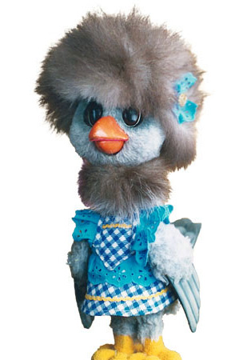

Raisa Gorbacheva (activist and philantropist (areas of fundraising: blood cancer, cultural memory,
Alla Pugacheva (pop diva, entrepreneur),
Marina Goldovskaia (documentary filmmaker),
Karkusha (the first fictional female character introduced on children's TV show "Good Night, Little Ones". Previously all characters, role models were male.

Fig.1 - Karkusha, the only female character on Good Night, Little Ones, appears on the show on the eve of perestroika (1982).